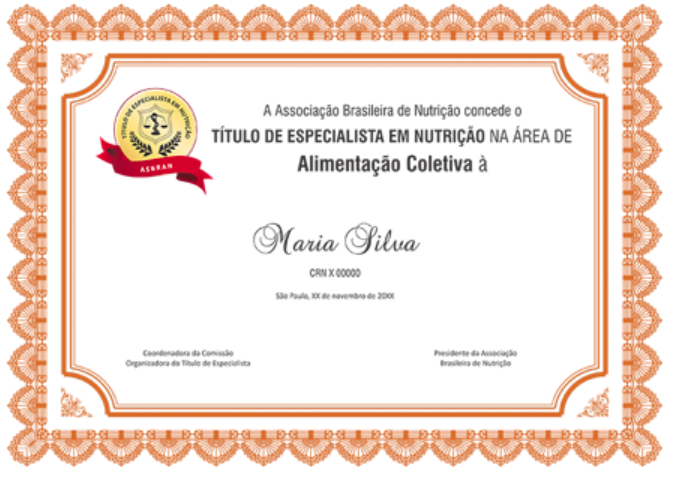

Especialista em Nutrição
O Título de Especialista - TEN é o reconhecimento da capacitação técnica e científica, no desempenho das especialidades profissionais. Consulte os detalhes completos do edital e das especialidades contempladas na página de referência.
